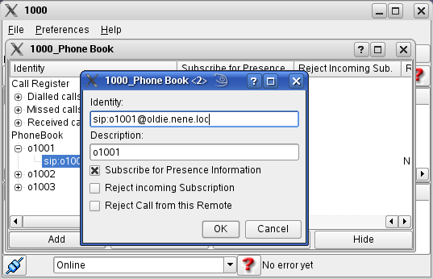
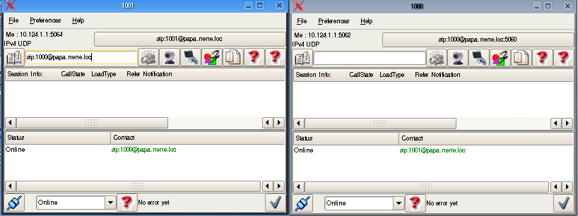
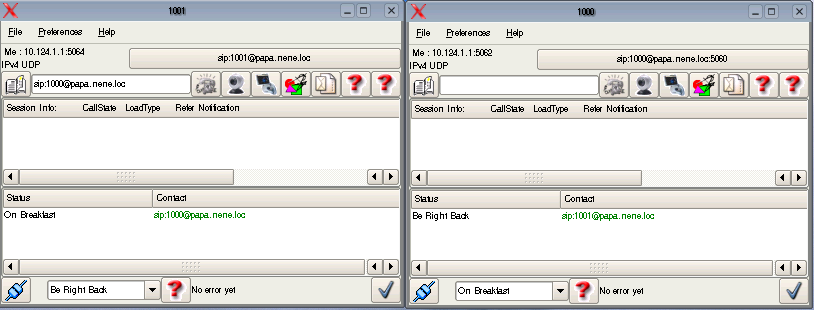
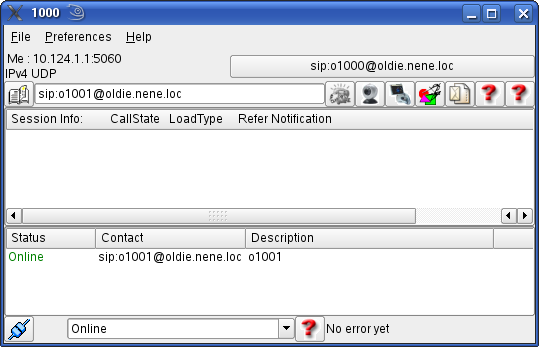
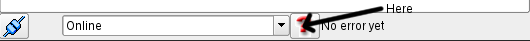
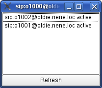

back to the ToC
KPhoneIS User
Manual: Presence and Contact Lists
Table of contents
- KPhoneIS User
Manual: Presence and Contact Lists
- Presence
Modes
- End-to-End Mode
- Presence Server Mode
Presence
Modes
KPhone SI allows two presence modes:
- End-to-end mode , in this case KPhoneSI acts Edge Presence
Server (sends and receives SUBSCRIBE and NOTIFY)
- Presence server mode, KPhoneSI sends PUBLISH and SUBSCRIBE
messages to the presence server and receives NOTIFY from
that.
To set KPhone into the end-to-end mode, in
Preferences->Settings set "Expiry Time of Publish" to zero.
End-to-End Mode
A contact is initialized in the Phonebook, by
clicking the „Add Identity to Contact List“ button.

The selected partner gets a notification. The phonebook is
opened, if the selected partner had no entry of the
subscriber yet.
If he
accepts, the new contact entry appears in the contact windows of both
partners.

The presence state may be changed:

Presence Server Mode
Again, a contact is initialized in the Phonebook, by
clicking the „Add Identity to Contact List“ button and entering the
desired partner's URI:
If the subscribed UA allows Presence for us, the presence
information will appear in the contact window.

A subscription to the event watcher
info, allows to oversee who subscribed us. KPhoneSI does
thisautomatically, if it is in presence server mode.
The watcher list can be activated with the watcher toggle button,
a red interrogation mark:

The watcher list pops up then.

back to the ToC